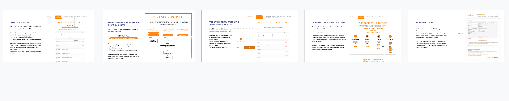
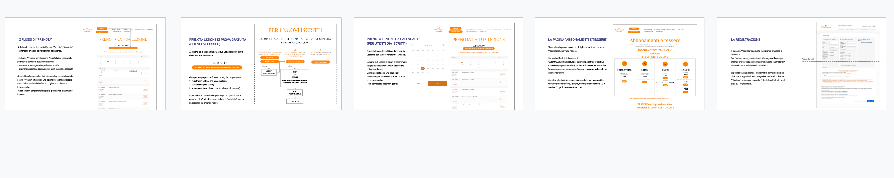

BALI YOGA | Desktop, Mobile, App
L'azienda è un centro yoga che offre lezioni con vari stili e livelli.
Servizi e vantaggi:
- Classi individuali
- Corsi professionali
- Corsi aziendali
- Workshop
- Lezione di prova gratuita
- 2 tipi di lezioni: in palestra e interattive
- 14 stili yoga
- 3 livelli: base, intermedio, avanzato
- 25 insegnanti

Ruolo: UX e UI design, ho coperto tutte le fasi progettuali
dalla mappatura del problema al disegno dell'interfaccia utente.
Durata: 5 settimane.
Il problema riguarda i Corsi Individuali
- Non è chiaro che l'azienda offre anche questa tipologia di corsi.
Perchè non sono menzionati nella home che pubblicizza solo i corsi per diventare professionisti. - Inoltre le informazioni relative ai corsi individuali sono frammentate in varie pagine impedendo all'utente di avere una panoramica e facendogli iniziare / interrompere molti flow.
- L'obiettivo primario dell'azienda non è chiaro.
Tutti i pulsanti sono CTA primarie quindi l'utente non è guidato a seguire un percorso intenzionale.
Qual è lo scopo del progetto?
Poichè l'azienda punta sull'acquisto e prenotazione online dei servizi, l'obiettivo è
ottimizzare la user experience in tutte le pagine necessarie all'utente per usufruire del corso individuale,
partendo dalla richiesta della prova gratuita, l'acquisto di un pacchetto fino alla prenotazione su calendario.
E perchè?
Rendere immediatamente chiaro all'utente che l'azienda offre anche corsi individuali e facilitare la loro iscrizione fornendo: informazioni chiare e percorsi di acquisto e prenotazione più diretti e intuitivi permette all'azienda di ottenere un target più ampio rispetto a quello che può raggiungere pubblicizzando solo i corsi di training e corporate.
ANALISI DEL BRAND
Tramite una valutazione euristica generale ho individuato i problemi del sito.
Ho successivamente generato la sitemap as is, seguita da un'analisi
delle pagine e flussi relativi ai corsi individuali:
- I 2 percorsi di "Prenota lezione": per il nuovo utente (prova gratuita) e per l'utente iscritto
- Il percorso "Acquista lezione"
- Pagina Tariffe
- Modulo di Registrazione che si apre in fase di checkout
 

ANALISI COMPETITIVA
Bali Yoga è considerato uno dei migliori centri yoga di Milano sia dalla stampa che dai frequentatori;
la conferma è data dalle molte classifiche disponibili online.
I competitor diretti sono 5 brand attivi a Milano,
identificati perchè tendono a comparire nelle stesse classifiche:
Spazio Garibaldi 77, Casa Yoga, City Zen, Rama Yoga e Nalu Yoga
Elementi in comune:
- possibilità di lezioni in streaming
- anche corsi di formazione
- prenotazione online
Differenze:
- non tutti offrono la prova gratuita
- alcuni hanno un servizio extra
Metodi di Analisi:
- FEATURES INVENTORY
Per comparare le funzionalità dei siti competitor ma anche gli elementi visibili al 1° livello della navbar e fare un rapido confronto.
SCOPO: stabilire a quali feature e categorie dare priorità e identificare come gli altri brand organizzano i gruppi di informazioni. - TASK ANALYSIS
Per identificare i flow che l'utente segue nei siti competitor per raggiungere il suo obiettivo.
SCOPO: capire se la concorrenza gestisce meglio il percorso di acquisto e vedere i punti decisionali critici dell'utente durante il processo.
Risultati
Il checkout Bali Yoga risulta fluido per l'utente esperto, ma le card cliccabili
(@home, marghera 43, etc.)
rischiano di distrarre o mettere in confusione l'utente meno esperto o peggio di farlo uscire dal processo.
Tutte le aziende prese in esame usano il CRM Mindbody quindi il flow è identico, cambia solo il nome delle CTA.
Punto a favore è che il checkout permette allo user di modificare facilmente l'ordine (numero di articoli / cancellare / continuare lo shopping).

Ipotesi da validare
Ipotizzo che la struttura attuale dei corsi individuali rischia di far uscire l'utente dal sito perchè:
- non è facile capire come funzionano in quanto le info importanti sono frammentate in più pagine;
- la richiesta della prova gratuita avviene in più di 8 click;
- la pagina tariffe non offre una panoramica dei tipi di pacchetti e richiede un eccessivo scroll verticale soprattutto nel mobile;
- il checkout ha elementi di distrazione per l'utente meno esperto.
RICERCA UTENTE
L'audience ha vari gruppi di età, approssimativamente tra 20 - 65 anni e pratica la disciplina per combattere lo stress,
tenersi in forma in modo sano, riequilibrare mente e spirito.
La definizione del target si basa sui follower e post pubblicati nel profilo Instagram aziendale.
Ho sottoposto un sondaggio a 70 persone tra 18 - 60 anni con il prerequisito che seguano o abbiano
seguito un corso di fitness o yoga in una palestra.
Tramite i dati raccolti ho definito 4 Persona.

DATI OTTENUTI
L'86% degli utenti preferisce iscriversi alle classi in palestra piuttosto che online.
Ci può essere un comportamento / motivazione diversa tra l'acquisto di un prodotto rispetto a un servizio.
L'utente che compra abitualmente un prodotto online potrebbe essere riluttante riguardo a un servizio. Quindi:
- Rendere il processo di pagamento più accessibile (es. aggiungendo altre opzioni di pagamento)
- Rendere i moduli form più intuitivi.
Per il 43% il prezzo è motivo di scelta.
Il sito rispetto ai competitor offre ampia scelta di pacchetti.
Provare a metterli in evidenza e rendere la pagina più usabile specialmente nella versione mobile (troppo scroll verticale).
Solo il 12% è infastidito da troppi pulsanti.
(Contro le mie aspettative.) Sicuramente i "3 semplici step per il free trial" sono da rivedere,
ma probabilmente le CTA “Acquista” e “Prenota” nella header potrebbero rimanere bottoni.
Solo il 14% dei partecipanti dichiara di prestare attenzione agli aspetti visivi
(es. i Video), comparato al 71% che dà priorità alla descrizione approfondita dei corsi.
Le categorie potrebbero essere meglio raggruppate (sitemap), i testi di alcune sezioni più leggibili
(alcuni hanno dimensione 8pt) e gli elementi interattivi dovrebbero essere differenziati da quelli statici
(un contro emerso anche durante l'analisi euristica).
I servizi aggiuntivi che gli utenti vorrebbero (bar) riguardano la location non il sito.
Eventualmente il cliente che compra un pacchetto lezioni potrebbe essere omaggiato con uno snack brandizzato (1 acquisto = 1 snack)
da offrire quando si presenta in palestra e menzionare il "regalo" nella pagina d'acquisto.
4 PERSONAS

14 OPPORTUNITÀ
Emerse da analisi e user journey
- Dalla home non sono immediatamente chiari tutti i servizi offerti. → Aggiungere una sezione in homepage per ogni servizio, dando maggiore enfasi ai corsi individuali (possibilità di raggiungere un pubblico più ampio rispetto ai corsi di formazione e aziendali).
- "Prenota lezione di prova" ha troppi pulsanti e il flusso dell'utente è confuso e interrotto.→ Ridurre i click e rendere i flow più lineari.
- Il "Calendario" potrebbe essere migliorato. → Ottimizzare la visualizzazione del calendario e implementare i filtri.
- La pagina "Prezzi" non fornisce una panoramica immediata di tutti i pacchetti disponibili. → Riorganizzare i pacchetti per facilitare la loro visione a colpo d'occhio.
- La pagina "Lezioni" ha troppe CTA: link e pulsanti. → Stabilire a quale flow dare precedenza e rendere secondarie le altre CTA o in alternativa considerare di accorpare alcune pagine.
- "@Home" ha 6 pulsanti principali. → Ridurre il percorso "Prenota lezione di prova" a 1 bottone ed eliminare uno dei due bottoni di acquisto perchè conducono allo stesso identico risultato.
- Il download dell'app è dentro una sezione. → >Prevedere un link o icona anche nel footer.
- "Dove siamo" (si chiama "I nostri studi") è dentro "Chi siamo". → Si potrebbe mantenere come sottocategoria del menu, ma dare maggiore evidenza tramite icona nel footer.
- "Stili yoga" è dentro "Chi siamo". → Raggruppare le pagine in modo che risulti più logico e coerente per l'utente.
- "Stili yoga" non ha CTA. → Linkare al "Calendario" o "Tariffe" o in alternativa renderla sezione di un'altra pagina.
- "Checkout" ha un'interfaccia grafica diversa. → Uniformare la UI.
- "Checkout" ha varie card cliccabili che rischiano di interrompere il flusso di acquisto. → Eliminare le card perchè riguardano le lezioni in programma quindi è più utile lasciarle solo nel Calendario.
- La form di "Registrazione" è troppo lunga. → Rivedere i campi obbligatori e rendere consultabile la form completa tramite click.
- "Metodi di pagamento" offre opzioni limitate. → Aggiungere pagamento veloce e altri metodi.
Queste opportunità hanno condotto a un journey migliorato per ogni Persona.
2° VIAGGIO UTENTE
Con i pain point eliminati o ridotti
Per ogni Persona era stato costruito un primo user journey nel sito as is.
Gli atriti emersi dall'esperienza di navigazione hanno guidato a
un secondo user journey con le opportunità di miglioramento emerse.

ARCHITETTURA DELL'INFORMAZIONE
La nuova sitemap
Analisi e user journey hanno condotto a una modificazione della sitemap attuale.
FLUSSO UTENTE
Attraverso i wireflow
Per ogni device (desktop, mobile, app) ho sviluppato dei wireflow.
DESKTOP & MOBILE
- Richiesta di 1 lezione di prova
- Prenotazione lezione su calendario
- Ottimizzazione dei filtri
- Acquisto di un pacchetto
Stessi flussi plus:
- Dark / Light mode
Seguiti dai wireframe cliccabili.

LOGO REDESIGN
Il fiore del logotipo originale è stato mantenuto diventando un loto di 7 petali con sopra un cerchio
rappresentante i chakra.
Il font "Thasadith - Bold" riprende le forme allungate del petalo:
Il logo attuale è arancione, un colore largamente usato nel food environment; la nuova palette è il risultato
del sondaggio sottoposto a un gruppo di user in fase di ricerca:
INDACO - 6° Chakra (terzo occhio)
Simbolo di spiritualità e risveglio interiore, rappresenta il rapporto con le nostre capacità interiori.
VERDE - 4° Chackra (cuore)
Il colore dell'armonia e della natura: simboleggia equilibrio, pace e rinnovamento.
UI KIT
Il colore primario è indaco, il secondario è un indaco più chiaro / lilla. I pulsanti e alcuni box hanno due estremità opposte arrotondate per riprendere la forma del logo e creare quindi un sistema più consistente.
PROTOTIPO | Desktop
PROTOTIPO | Mobile & App
TEST DI USABILITÀ
Per questo progetto non ho condotto un reale test, ho solo ipotizzato
di effettuare 3 test con vari task sui principali aspetti delle interfacce al fine di determinare i livelli di usabilità.
I partecipanti dovrebbero essere i clienti attuali e/o follower del brand contattati tramite email
o post pubblicati nei canali social con il seguente invito:
"Stiamo apportando delle modifiche al nostro sito baliyoga.it per migliorare i servizi che offriamo,
per rendere la navigazione più semplice e l’esperienza delle persone che lo usano più piacevole.
Per farlo ABBIAMO BISOGNO DI TE.
Vogliamo imparare grazie ai tuoi feedback o suggerimenti che saranno preziosi per migliorare i nostri servizi.
Per questo ti invitiamo a partecipare a un test che durerà circa 10-15 minuti in cui ti chiederemo di svolgere delle
azioni all’interno del sito.
Ciò che testeremo sono le pagine non le persone quindi non esitare!"
L’utente può scegliere se fermarsi al primo test o completarli tutti e 3.
In cambio della partecipazione verrebbe offerto uno dei seguenti vantaggi per ringraziare i tester
del contributo e il tempo dedicato:
- sconto su un pacchetto lezioni
- gadget brandizzato (fascia economica)
- accesso ad un contenuto video esclusivo.
CRITERI
- Di persona, moderato
- Tempo assegnato
- Target di 5 utenti (m/f) con proficienza medio/alta dei device (perchè la prenotazione online è sempre richiesta)
METRICHE
- Tasso di completamento task
- Tempo di completamento
- Primo click
- Tempo medio sulla pagina e numero di click
- Tasso di errore
TEST 1 Interfaccia Desktop, Mobile & App
Metodo: Test scritto, moderato
3 task scenario che coprono tutto il percorso necessario all'utente per usufruire di un corso individuale.
TASK SCENARIO A
"Non hai mai fatto yoga ma saresti interessato/a a praticarla. Ti è stato consigliato il centro Bali Yoga
che offre 1 lezione di prova gratuita.
Ti trovi nella homepage del sito e vorresti richiedere una lezione gratis. Dove cliccheresti?"
OBIETTIVO A
Capire se l’utente che interagisce con il sito per la prima volta apprende immediatamente che può
ottenere una lezione gratuita.
TASK SCENARIO B
"Sei intenzionato a fare yoga da casa tua tramite lezioni online, per questo vorresti acquistare un pacchetto
dedicato esclusivamente alle lezioni interattive.
Vuoi acquistare 5 Lezioni da effettuare esclusivamente a casa. Dove andresti per comprare questo pacchetto?"
OBIETTIVI B
Si può procedere in vari modi, tramite:
- Pulsante "Acquista" nella header
- Menu > Lezioni
Capire se la suddivisione dei pacchetti palestra / interattivi è sufficientemente chiara e se l’utente capisce velocemente che alcuni sono misti.
TASK SCENARIO C
"Hai già un’abbonamento ai corsi yoga e vorresti solo prenotare la tua prossima lezione sul Calendario
del sito.
Vorresti segnarti per la lezione serale di venerdì 16 marzo tenuta dall’insegnante Fabrizio. In che
pagina andresti?"
OBIETTIVI C
E’ possibile completare il task tramite:
- Pulsante "Prenota" in header
- CTA in pagina Lezioni
Capire se la procedura di prenotazione risulta fluida e facile per l’utente.
TEST 2 Interfaccia Desktop & Mobile
Metodo: Test dei 5 secondi
Viene mostrata la pagina Lezioni e chiesto all’utente di memorizzare più elementi possibili in 5 secondi. Scaduto il tempo gli si fanno alcune domande.
DOMANDE
- Qual è il servizio offerto nella pagina che hai visto?
- Cosa puoi fare tramite questa pagina?
- Cosa puoi fare se clicchi il pulsante tutto blu?
- Questa pagina ti dà info sulle lezioni interattive?
OBIETTIVI
Valutare se:
- La UI comunica correttamente il messaggio
- I contenuti sono subito chiari
- Le CTA sono percepite correttamente.
INTERFACCIA MOBILE

CONSIDERAZIONI FINALI
COME GLI ERRORI DURANTE LA RICERCA PORTANO IL DESIGN IN ALTRE DIREZIONI
Non è stato possibile chiedere al target di navigare il sito attuale, questa costrizione ha probabilmente fatto virare le soluzioni progettuali in un’altra direzione perchè ho fatto domande generiche. Nonostante ciò ho ottenuto degli input utili.
L’APP OFFRE DAVVERO UN VALORE AGGIUNTO?
Attualmente no, perchè non ha funzionalità extra rispetto a quelle presenti nel sito.
L’utente può acquistare e tenere sotto controllo le sue tessere e il calendario prenotazioni.
Nel redesign ho aggiunto il login nella header dell’interfaccia desktop e mobile, quindi l’utente può tenere sotto controllo
la sua attività anche dal sito senza necessità di usare l’app.
Aggiungere una feature: per rendere l’app più utile si
potrebbe ad esempio aggiungere uno “Yoga Calories
Counter”, in modo che l’utente possa calcolare quante
calorie ha bruciato per ogni sessione di attività (minuti /
livello) per stimolare la motivazione e aumentare il suo engagement con il servizio aziendale.